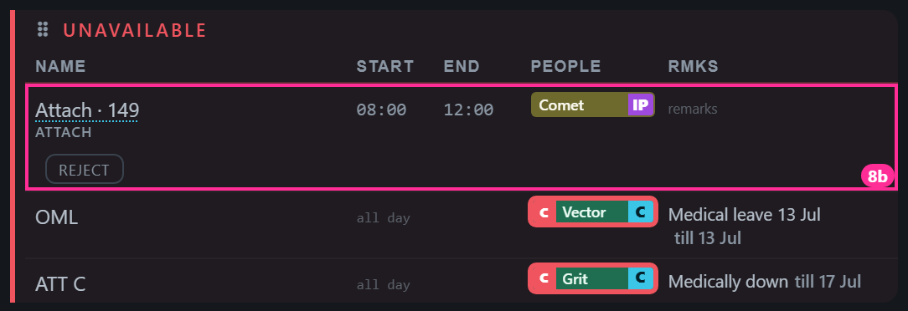
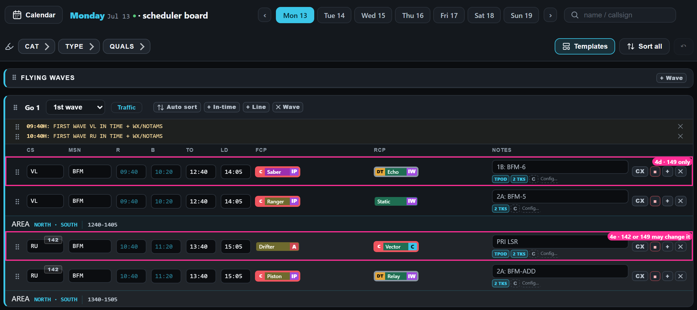
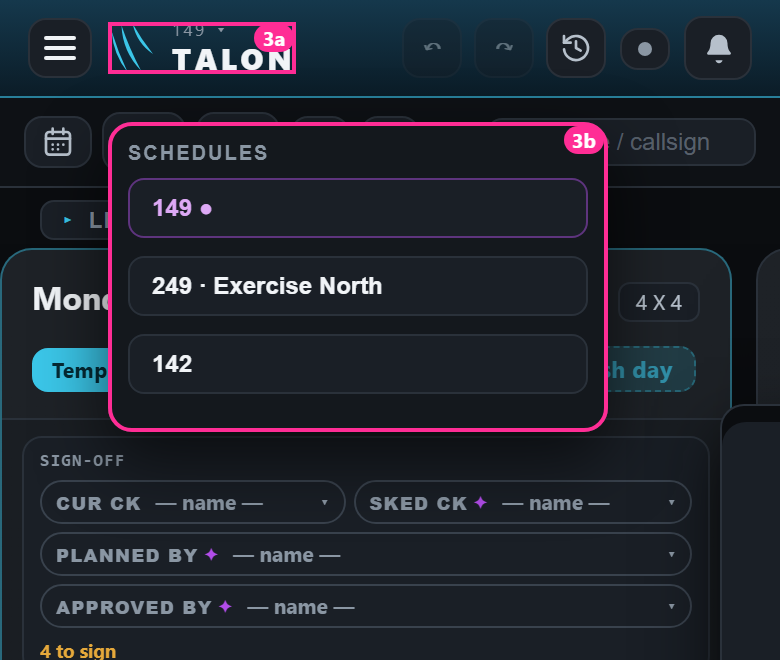
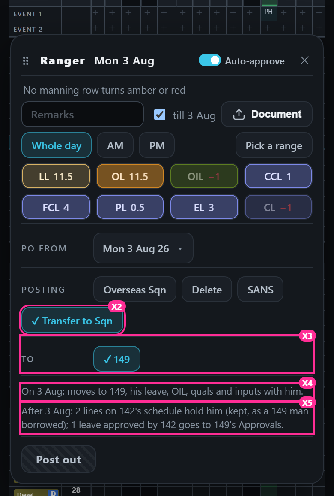
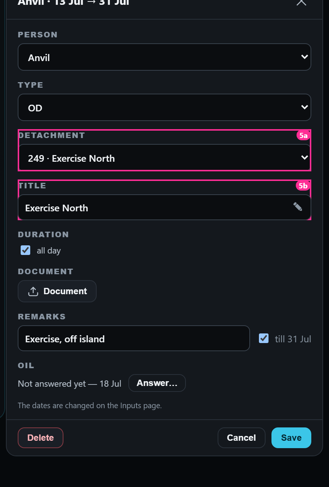
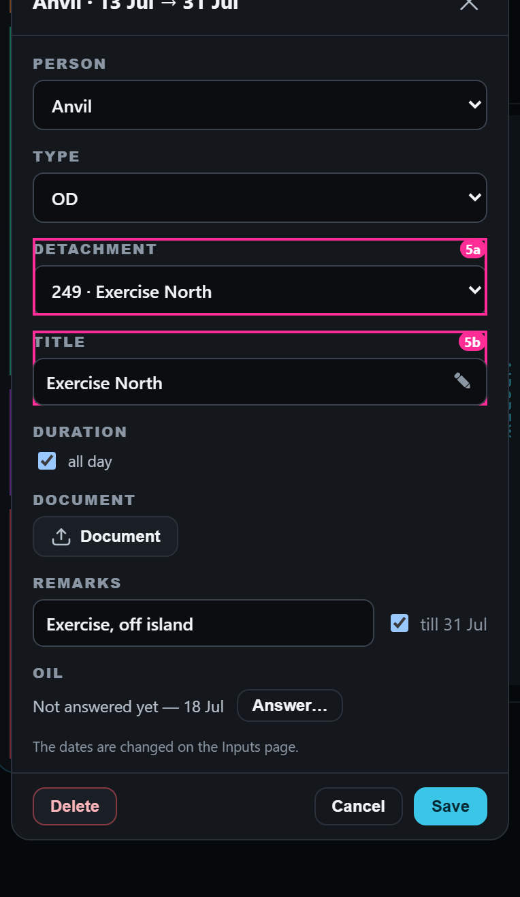

Two squadrons: round 6
Two readers red-teamed the whole squadrons plan, each blind to the other: Astra first, then a fresh Opus reader. Below is what they found that needs your call, then what I will do unless you disagree. Every picture is the real app with demo data; the new part is marked in pink. A picture marked "round 2", "round 3" or "round 4" is an earlier round's picture, shown again for the place it is about.
Look at now: one decision each
- Q1OIL when a man works for both squadrons on one day. Recommended: one day, one credit, judged by his own squadron's OIL settings. both readers · serious
- Q2Closing a detachment early when its later days are already published. Recommended: closing withdraws those days by amendment, and a past day can still be corrected. both readers · serious
- Q3A pick from 149's draft onto 142's published day. Recommended: it reaches 142 only once 149 publishes. Until then it shows dotted and nothing is pending. both readers · serious
- Q4149 puts a 142 man in 149's own line. May 142 now change that line? Recommended: no, it stays 149's alone. serious
- Q5Giving a 142 man access to 149 "as a scheduler". Recommended: that lets him edit 149's schedule pages only. Admin of 149 is a separate grant. serious
- Q6Does a borrowed man's "Attach · 149" row count him out on the Leave War? Recommended: no, since he is at work at home.
- Q7Post out's "Transfer to Sqn" (your D2136), drawn. Recommended: the sheet as drawn, and what he carries as listed.
Only if you disagree: I will design these as written
- RR1 to R11: technical follow-ons, each a reader's finding with my fix.
Later rounds
- LNine questions the design has never answered, kept for later rounds. Nothing to answer now.
Q1 · OIL when a man works for both squadrons on one day
Example. On a Saturday, not a working day, Saber (142) sits 142's Ops desk 08:00–10:00, then flies a 149 sim 10:30–12:00. Both squadrons publish. If each squadron's day is worked out on its own, he earns half a day from each: a full day for a 4-hour Saturday, so he is paid twice. If the second squadron's publish overwrites the first, one half is lost. Today the app pools one man's whole day into one span, first start to last end, and gives one credit, so the plan has to say how two schedules feed that.
Recommended: one day, one credit. His work from both squadrons' latest published days is pooled into one span, 08:00–12:00, which earns half a day. Whether the day earns at all, and the "Full day of OIL" line, come from his own squadron's settings and calendar, since that is where his leave is banked. The amount never depends on which squadron publishes last. If 149 amends him off its sim, his credit is worked out again from what 142 still has.
Other choice: each squadron pays for its own part, worked out separately. It is simpler, but pays twice on short days.
Nothing new on screen: the Leave War's OIL tab shows one figure for the day, as today.
Q2 · Closing a detachment early when its later days are already published
Example. 249 runs 13–31 Jul. Its scheduler has already published Sat 25 and Sun 26, with six men flying. On Thu 23 the exercise ends early and the admin presses "Close detachment". The six are home from that day (D2135). But 25 and 26 are still published, so they still earn weekend OIL for days spent at home. And because a closed detachment's schedules are read only (D2103), nobody can amend those days, nor correct a mistake found later in any past detachment day.
Recommended: before it closes, the question card lists the detachment's published days after today ("25 and 26 Jul are published. Closing takes everyone off them."). Closing makes an amendment for each, waiting for its signatures like any amendment. "Read only" then means no new planning: a past detachment day can still take a correcting amendment from its squadron's admins. This narrows D2103.
Other choice: "Close detachment" waits until those days have been withdrawn by hand.


Q3 · A pick from 149's draft onto 142's published day
Example. 142 has published Tuesday. On Monday evening 149's scheduler, still drafting, picks Viper (142) for 14:00–16:00. Under D2107, 142's Tuesday at once reads "1 pending" and its four sign-offs fall. 142 signs and issues AL1 showing "Attach · 149 14:00–16:00". Then 149 takes Viper off before publishing. 142's issued AL1 now records an attachment that never happened, and every change in 149's draft knocks 142's signatures down again.
Recommended: on a published 142 day, the Attach row follows 149's published version. While 149's day is still a draft, 142's working copy shows the row dotted: "Attach · 149 · not yet published by 149". It is not pending and the signatures stay. When 149 publishes, it arrives as a pending change, as D2107 says. The clash checks still see 149's draft at once. This narrows D2107: the pick reaches 142's day when 149 publishes, not when it is made. Each 142 issue also keeps exactly what 149 had published at the time, so opening an old 142 issue never shows 149's later changes.
Other choice: keep D2107 as ruled, but refuse 142's publish while any Attach row comes from a 149 draft.


Q4 · 149 puts a 142 man in 149's own line. May 142 now change that line?
Example. VL is 149's own formation in 149's wave, marked "149 only" in round 4's picture. 149 then picks Saber (142) into VL's back seat. My reading of D2114 said a line "concerns both" when it "holds men of both", so 142 could now change VL's mission, its times and 149's own crew. 142 could even drop one of its men into any 149 line just to be able to edit it. That reading also clashes with D2098 ("the line is 149's alone"). Round 4's picture 7 drew VL whole on 142's schedule, which D2098 says never happens.
Recommended: "concerns both" means only one squadron's own line inside the other's wave, like RU in 149's wave. A line holding a borrowed man stays its own squadron's alone. 142 sees Saber's "Attach · 149" row and any clash, and fixes it by changing its own lines or by asking 149. Round 4's picture 7 will be redrawn with Saber's Attach row on 142's schedule, not VL.
Other choice: 142 may also take its own man off 149's line (only taking him back, nothing else on it), with 149 told by the bell.


Q5 · Giving a 142 man access to 149 "as a scheduler"
Example. An admin gives Hawk (142) access to 149 "as a scheduler" (D2094). In this app a scheduler is always an admin (D785), so Hawk becomes 149's full admin. He can change 149's crew rest, approve or refuse 149's leave, archive or delete 149's people, tick their quals and close 149's detachments. The app's list of who may do what has no squadron in it yet, so nothing stops a 149 admin archiving a 142 man either.
Recommended: two separate grants on Admin → Users. "Scheduler of 149" lets him edit 149's schedule pages (Edit Schedule, the Scheduler Board) and the lines D2114 allows, and nothing else of 149's. "Admin of 149" is everything, given only by a master admin or by 149's own admins. Every admin right counts only in the squadrons where the person is an admin. This narrows D785 for the other squadron only. Because it touches permissions, it gets the extra security read (D1411) when built.
Other choice: keep one grant, so anyone given 149 "as a scheduler" is 149's admin in full.


Q6 · Does a borrowed man's "Attach · 149" row count him out on the Leave War?
Example. 149 picks Viper (142) for two hours of academics on a Tuesday. His home schedule gets the "Attach · 149" row (D2098; the row is in Q3's picture). Today an Attach counts a man out on the Leave War, here by half a day (D1374). So 142's Available P drops, and can raise the manning warning on someone's leave bid, though Viper is at work at home.
Recommended: the Attach row made from the other squadron's plan never counts him out on the Leave War. An Attach filed by hand, for a unit outside the app, still counts as today. This narrows D1374 for that one row.
Other choice: it counts only when it covers his whole working day.
Q7 · Post out's "Transfer to Sqn" (your D2136)
Ranger's Post out sheet on the Leave War. Today "Transfer to Sqn" is greyed out. As drawn, it can be pressed. A "To" row names the squadron: every squadron made in Admin → Squadrons except his own (only 149 in the demo). The sheet's one line says what happens on the date. One more line, shown only when there is something to say, lists what the date affects, so nothing moves silently. The button stays "Post out".



Recommended, what he carries. Both readers agree it is the same person who moves, never a copy.
| Goes with him | His account, callsign, inputs and medical records, quals and currencies, leave balances, OIL and leave records, Tracker course and marks. |
|---|---|
| Stays with 142 | Every 142 day already published with him on it, his months on 142's Leave War up to the date, the change history. |
| Listed on the sheet first | 142 lines after the date that hold him (kept, now as a borrowed 149 man); leave 142 approved after the date (goes to 149's Approvals, and 149 may still refuse it, D1541); bids in an open round (returned); his roles (142 admin ends on the date, nothing in 149 is given by itself, 149's admins are told). |
| Refused | His own squadron; a squadron not in Admin → Squadrons; a date inside an earlier posting (D328); an overseas duty onto a 142 detachment across the date (end it first); leaving 142 with no admin (D306). |
| Undo post out | Before the date, it simply cancels the posting. After the date, it lists what 149 has done with him since, then asks. |
When it runs, the bell's line will read "Ranger · Mon 3 Aug / Posted out · now with 149", in the posting's own bell format (D1547). Drawn next round.
R · Only if you disagree: I will design these as written
- R1 · The "Attach · 149" row is worked out from 149's plan, never an input. Viper cannot edit or delete it, it asks no OIL question and it never reads LATE. Both readers found that if it were built "as the Attach input does today", it would do all four.
- R2 · An overseas duty naming a detachment asks no OIL question. The detachment's published schedule pays, as the home schedule does. Otherwise one answer for six men would pay every weekend of three weeks, flying or not. "None" (a staff trip) still asks. Picture.
- R3 · That overseas duty counts him away at home and present at the detachment. Read literally today, it would also strike him out at the very detachment he joined. It is refused outside the detachment's open dates, and moving the detachment's "To" offers to move its men's duty with it.
- R4 · One man, one place: checked afterwards too. Today's rule only refuses the pick. A man can still end up at two places when he files his own overseas duty, the squadron's place moves, a detachment closes or he is transferred. So: a red warning on any line holding a man not at its place, pending on a published day; a place move, Close and a transfer each list the lines they break before saving; and two overlapping overseas duties naming different places are refused.
- R5 · Crew rest, days in a row and the long day follow the man across a move between places. "Different places are never checked" stays for people, areas and sims shared on one day. Without this, a man flying 149's night wave and then 249's 06:00 line the next morning gets no crew-rest warning. This narrows D2092.
- R6 · A detachment's ALL AVAIL counts the men on it. Each home ALL AVAIL counts its own men who are at home.
- R7 · A squadron's place keeps its history. A move counts from the moment it is saved (D2119, still no "From"). Earlier days keep the place they had, so a move never changes a past published day's checks.
- R8 · Whose settings judge a man's day. Crew rest is judged by the schedule of his first flying line that day, which leaves D2123's worked case unchanged. Days in a row, the long day and Insights' hours use his own squadron's settings.
- R9 · Two schedulers on one shared line. A change to your own line in the other squadron's wave waits while someone is editing that day, naming them. "Take over" reaches only your own squadron's days. If two people save at the same moment, the one who loses is told "RU was changed by 149 just now. Your change was not saved."
- R10 · The Tracker gets a squadron per course, and each squadron edits its own. A correction: in round 3 I told you a sortie flown on 149's schedule counts on the student's own Tracker. That is wrong: no sortie reaches the Tracker by itself today. Whether it should is a question for the Tracker expansion.
- R11 · SANS stays for people outside the app's squadrons. A 149 man flying with 142 is borrowed, not SANS. Post out refuses SANS for a man going to one of the app's squadrons and points to "Transfer to Sqn".


L · Questions for later rounds (nothing to answer now)
- A detachment overseas: its time zone, and which clock decides "today", a transfer's date and a closing day.
- A detachment at its own squadron's place: refuse it (recommended).
- Which detachments a man's overseas duty may name (his own squadron's, recommended).
- A detachment's own Logic settings and signers, and who may see its schedule.
- Whose late cut-off judges a shared input's LATE mark.
- Undo of "Close detachment" and of a place move.
- A primary squadron chosen wrongly at sign-up: who corrects it, and until when.
- Insights for a borrowed man: his own hours on both schedules, with each squadron's totals counting its own lines (to confirm).
- The SANS calendar's need when the other squadron has free people (unchanged, recommended).